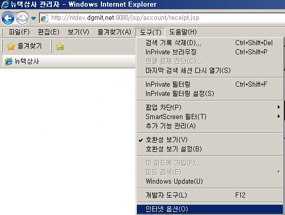
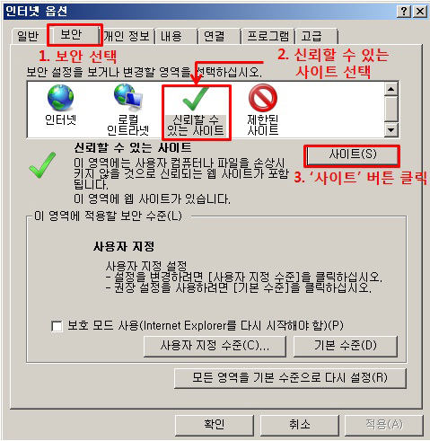
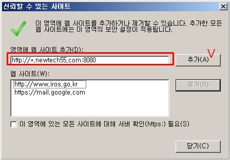
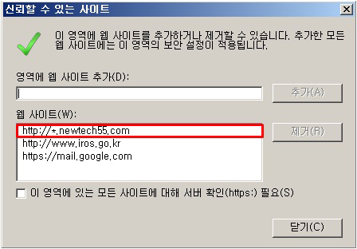
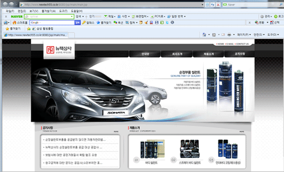
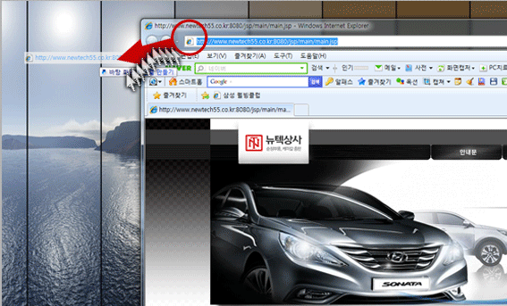
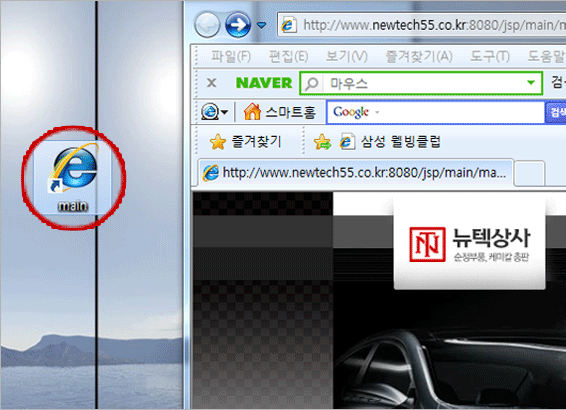

익스플로러 창의 "도구>인터넷옵션" 으로 들어갑니다.
상위메뉴에서 "보안"으로 들어가 "신뢰할 수 있는 사이트"를 선택하고 "사이트" 버튼을 클릭합니다.
"https://nt-hq.nt34.net/" 를 웹사이트 추가 합니다.
추가된 화면입니다. 이 설정은 미전송으로 청구서가 재전송 되는 등의 상황을 방지합니다.
첫번째로 필요한 페이지를 열어놓습니다.
두번째로 필요하신 페이지의 상단 주소부분의 아이콘을 클릭후 (손을때지말고 ) 바탕화면이나 폴더에 옮겨줍니다.
완료된화면(버전에따라 아이콘의 모양차이는 있을수도 있습니다.)
